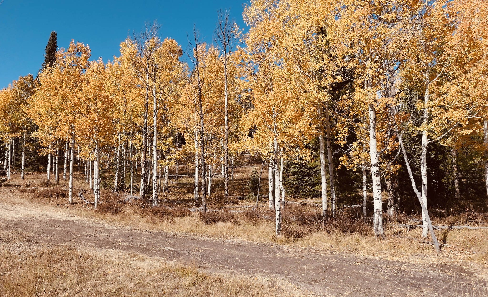
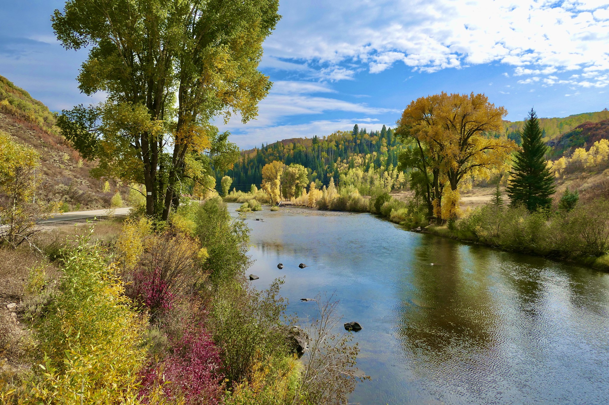
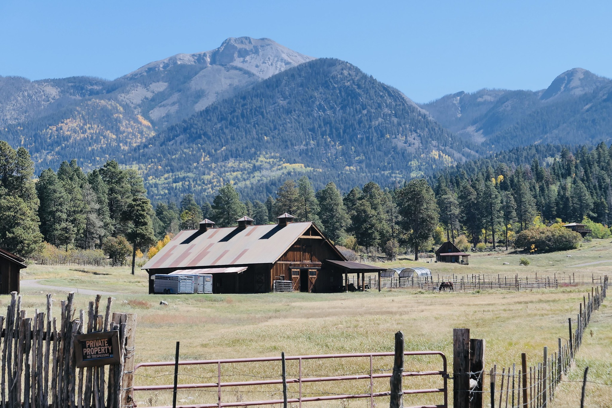
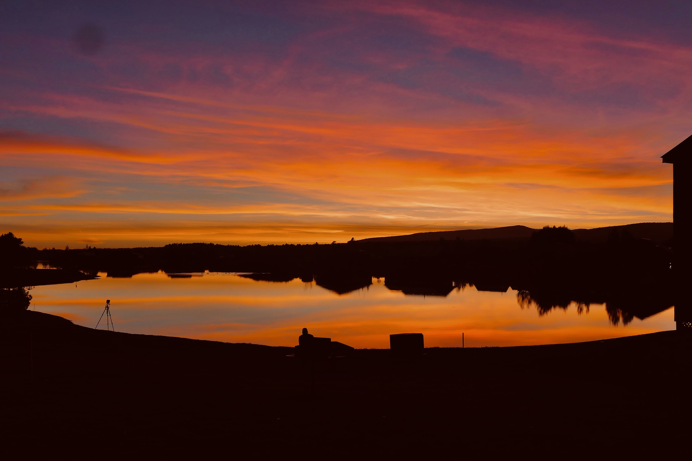

Colorado 2020
#travel #colorado #steamboatsprings #pagosasprings #blog
We decided to brave venturing out this Fall to Colorado. At the time the COVID-19 virus in outback Colorado was almost non-existent. For example the Pagosa Springs County had only 59 cases this year. Steamboat Spring’s County was a little higher - 152 cases.
We pretty much stayed away from people wherever we hiked. The other primary cause of human contact was at restaurants. Here we were surprised the wearing of masks was universal, unlike our home state of Texas where people seemed to be proud of discarding the mask and exposing themselves as well as others to the virus.
We stayed at Wyndham Timeshares in both locations. Our primary activities were hiking and driving around searching for Fall Color - of which was plentiful.
We did not make the trip because of the Fall color but were pleasantly surprised by the masses of color everywhere.
TL;DR
September 25: We flew to Denver and then drove to Steamboat Springs. The drive was uneventful except for the rock striking the windshield of the rental car and cracking the windshield.
Dinner was at Carl’s. Because of the COVID 19 virus we had made reservations for every evening meal which turned out to be a smart move. As we arrived at the restaurant the hostess was telling a couple without reservations they had two hour wait for a table
September 26: Breakfast this morning was at Creekside Cafe. 39 degrees and a table outside. Good thing we were prepared and had several layers of clothing.
Then we drove up the mountain to the Fiddlesticks Trailhead. Went the wrong direction which was a trail going down the mountain. After 30 minutes we wised up and marched uphill to the trailhead. Found the Fiddlesticks Trail and hiked it. Many aspens and pines all along the trail were downed with the roots pulled out of the ground. A gentleman we met on the hike told us they had a ferocious storm several weeks back with 100mph guts in the mountains. Most of us will not be around anymore when the trees have grown back. But this is Nature’s Way. Now the small trees have full sunlight and will grow to replace their elders.
Then back to town for lunch at the BackDoor. Dined outside. Very good
In the afternoon we drove along the Elk River past Clark on the lookout for Fall color and we found plenty. The best was north of Clark.
Dinner was at the Mahogany Ridge Brewery. Very good. We have our favorite places in Steamboat and Mahogany Ridge is one them. In fact all three establishments today are on the list.
After dinner back to the Wyndham and watched the Stars win a Stanley Cup game in double overtime.
September 27: Breakfast this morning was at Freshie’s. I was reluctant to go but the meal turned out great. Another keeper.
Kept to the condo in the morning and washed clothes.
Lunch at Creekside. Their lunch is as good as their breakfast.
Walked the Yampa Core Trail
Dinner at Mambo, Italian of course, was awesome. Food was the best and the atmosphere was better than at Mazzola’s which has great food also but is in a basement.

September 28: We checked out of the condo and drove from Steamboat to Pagosa Springs in Southern Colorado. During the trip we crossed the Colorado River, the Arkansas River, and the Rio Grandes as well as the Continental Divide at least twice driving from Steamboat Springs to Pagosa Springs.
For lunch during the drive South, we stopped in Buena Vista at the Simple Eatery & Spoon it Up. The restaurant has a strange name but serves up delicious fare. It is also a bakery. Buena Vista natives must love bread. It’s a small town but I counted at least two other bakeries.
After arriving in Pagosa Springs we shopped for dinner at the local City Market and had dinner at the condo while watching the Stars lose the Stanley Cup. They definitely played above expectations this year. No experts picked them to get this far.
September 29: Breakfast at the condo
This morning we took a beautiful drive into the mountains and saw some gorgeous Fall Color.
We had lunch at Colorado Roadhouse. Food was not bad but the servers were terrible. They obviously did not want to be there. Plus, they all wore their face masks hanging off one ear. DON’T EAT THERE!!!
Then we drove out to the Opal Lake Trail and started up it. Bad idea after a glass of wine for lunch.
We had dinner in the condo again. There are many breakfast and lunch restaurants here but not many dinner establishments and most of them are not good.
September 30: Breakfast at the condo.
We hung out at the condo this morning. Gwen washed clothes and Marv worked on Master Gardener tasks and read.
Lunch at the Condo again. Are you recognizing a pattern here? Most of our meals in Pagosa are at the Condo.
After lunch we hiked the Coyote Hill Trail.
Dinner at Alley House Grill. Dinner here is almost worth the trip to Pagosa. I told Gwen we should eat here every night we are in town but she demurred.
October 01: Breakfast at the. Condo
Washed clothes and hung out in the Condo in the morning.
Lunch at Lone Spur Cafe in Pagosa. Just opened. Has decent fare. Would be mediocre in McKinney but is great here.
After lunch we drove to Durango and strolled around downtown.
Bought a book - Talking to the Ground at Maria’s Bookstore. Maria only allows 8 customers in the store at a time. As you enter you have to sanitize your hands. Felt pretty safe there.
After the bookstore we walked the Animas River Trail
Before driving back to Pagosa we had dinner at Elous. ‘Twas very good.
Durango is 54 miles but several galaxies distant from Pagosa. There are many good restaurants in downtown Durango. Pagosa has one - Alley House Grill. There are many shops in downtown Durango. Downtown Pagosa has the Hot Spring and not much else
October 02: we drove to Denver. Staying the night at a Residence Inn on Tower Road close to the Airport. Dinner in the room while watching the MLB playoffs.
We detoured for lunch to Buena Vista to eat at the Simple Eatery again.
October 03: We flew home. We had an early flight so no breakfast just grabbed something quick at the Airport.
For more photos Click Here
Talking to the Ground
November 14, 2020
#book #Southwest
Talking to the Ground by Douglas Preston (published 1995). As per my habit of purchasing a book at a local bookstore while on vacation I bought Talking to the Ground at Marias Books in Durango Co.
Summary: In 1992 author Douglas Preston, his girlfriend, and her daughter rode horseback across 400 miles of desert in Utah, Arizona, and New Mexico. They were retracing the route of a Navajo Creation Legend where the deity, Monster Slayer, traveled through this area on his quest to restore beauty and balance to the Earth.
The trio travel on horseback and camp through four hundred miles of trails, beginning at Navajo Mountain, Utah, traveling on through Monument Valley, across the Utah Strip and Chinle Valley, and on to Canyon de Chelly, the Lukachukai Mountains, ultimately to finish in Shiprock, New Mexico.
Throughout their journey they encounter interesting people, mostly Navajo, who share their story all the while weaving in the legend of the Monster Slayer.
They also ponder greatly on the fate of the great mystery of the Southwest - Why did the Anasazi Disappear? Navajo legends paint the Anasazi as a people not living in harmony with Nature which ultimately led to their downfall but reveal little else?
What do archeologists think?
- Extended Drought - Some experts believe and extended drought before and during the time the Anasazi abandoned their cliff dwellings caused them to migrate. On major problem with this theory is there was a longer drought years before that did not drive them away
- Marauding Raiders - Another theory, put forward by early explorers, speculated that nomadic raiders may have driven the Anasazi out of their homeland. However there is no evidence of this
- Internal Strife - War among the different cliff dwellings resulting in even cannibalism
- A better place to be: From the Smithsonian July 2003 issue by David Roberts:
Archaeologists now generally agree about what they call the “push” that prompted the Anasazi to flee the Four Corners region at the end of the 13th century. It seems to have originated with environmental catastrophes, which in turn may have given birth to violence and internecine warfare after 1250. Yet hard times alone do not account for the mass abandonment—nor is it clear how resettling in another location would have solved the problem. During the past 15 years, some experts have increasingly insisted that there must also have been a “pull” drawing the Anasazi to the south and east, something so appealing that it lured them from their ancestral homeland. Several archaeologists have argued that the pull was the Kachina Cult. Kachinas are not simply the dolls sold today to tourists in Pueblo gift shops. They are a pantheon of at least 400 deities who intercede with the gods to ensure rain and fertility. Even today, Pueblo life often revolves around Kachina beliefs, which promise protection and procreation.
In the final reckoning maybe the Navajo were correct that the Ancient Ones did not live in harmony with nature and that caused their destruction. Does that remind you of today?
The Brother Gardeners
August 15, 2020
#blog #landscape
If you are a gardener and can read you will probably be interested in The Brother Gardeners: Botany, Empire and the Birth of an Obsession by Andrea Wulf. brings to life the dramas and dangers of eighteenth-century plant collecting.
Andrea Wulf could probably write and interesting autobiography. She was born India and moved to Germany as a child. She trained as a design historian at the Royal College of Art in London. However she chose to make a career of writing Botany and Gardening Books. This is the third book of her’s I’ve read. They were all delightful and interesting books which brought to life Gardening in the past and how we came to where we are today. The other books I’ve read which I heartily recommend are:
- Founding Gardeners: The Revolutionary Generation, Nature, and the Shaping of the American Nation
- The Invention of Nature: Alexander Von Humbolt’s New World
In The Brother Gardeners the author documents the rise of the Gardening Hobby in England led by a small group of 18th century naturalists that made England a nation of gardeners. The main characters:
- John Bartman
- Philip Miller
- Peter Collinson
- Carl Linnaeus
- Daniel Solander
- Joseph Banks
The book is an easy read. The author’s style keeps you interested. The following is some highlights of each of the main characters:
John Bartram
American farmer who shipped literally tons of plants and seeds to England over the years
Bartram traveled far and wide from Virginia to New York’s Catskills To collect specimens for Collinson and the English subscribers to his shipments
Philip Miller
Miller was a lowly nurseryman who, for much of his professional life, managed the quasi-medical Physic Garden in Chelsea.
Created the first Gardeners Dictionary The Gardener’s Dictionary. As a result he was voted into the Royal Society
Peter Collinson
Collinson was a wealthy merchant whose own story cannot really be separated from that of his New World business partner, John Bartram.
Peter was the recipient of Bartram’s parcels and an avid gardener. He organized the group of English Gardeners who paid for and shared Bartram’s plants and seeds
Collinson was the glue that held this extraordinary group of Gardeners and Botanists together.
He and Bertram although they never met each other in person became the closest friends and grew old together.
He was the first to die in 1768
Joseph Banks
His return from Endeavour's transglobal expedition turned Banks into an overnight sensation with the 18th-century equivalent of rockstar status. Aided by his great Swedish friend and collaborator, Daniel Solander, and backed by huge wealth based on estates in Lincolnshire, Banks became the pivot on which revolved the entire British botanical establishment.
He also became President of the Royal Society which he held for over 40 years. He did much to spread the knowledge of Botany throughout the World and to make the Sun never set on the British Empire
His accomplishment spread out far from Botany. For example he imported Spanish Sheep, breed them with English sheep, and exported them to Australia. They became the famed Merino Sheep.
Endeavour
The ship manned by Captain Cook and his crewed sailed around the World.
The voyage lasted from 1768 to 1771.
Two goals: observe the Transit of Venus in Tahiti and discover the fabled Great Southern Continent.
Transits were needed in order to calculate the distance of the Earth from the Sun
Joseph Banks and Daniel Solander sailed with the Endeavor to search out fauna and flora. They were allowed on the voyage because Banks in large part financed the trip.
Main stops were:
- Rio
- Tierra Del Fuego
- Tahiti
Carl Linnaeus
Swedish botanist, zoologist, and physician who formalized binomial nomenclature, the modern system of naming organisms. He is known as the "father of modern taxonomy
His classification method is still used today but at the time was considered scandalous because it was based on the plant’s sex organs - stamens and pistils.
Now that we have DNA will we reclassify plants based on DNA?
After his tour through Europe he returned to Sweden where he eventually became a professor at the University of Uppsala.
While there he used a group of volunteers to collect and classify all plants which he published as the Species Plantarum
Species Plantarum (Latin for "The Species of Plants") is a book by Carl Linnaeus, originally published in 1753, which lists every species of plant known at the time, classified into genera. It is the first work to consistently apply binomial names and was the starting point for the naming of plant
Daniel Solander
Disciple who Linnaeus sent to England. Much to Linnaeus’ dismay he stayed in England and became one of the first employees of the British Museum cataloging Han Sloane’s vast collection of dried plants, insects, and minerals
Robert Petre
If you are counting Robert is number seven and I said there were only six. He was like the Candle in the Wind popularized by Elton John. The book would have included seven but he died at the tender age of 30.
The Eight Baron of Petre. He inherited “Thorndon” at the age of 19 and devoted his life to transforming his estate as a showcase to American Plants in England.
He was the biggest customer of John Bartram. His zeal was so intense he even raised large mounds in the Northern part of his Estate to mimic the Appalachians that Bartram had described in great detail
Both Miller and Collinson were mentors for Petre.
Most unfortunate he died of smallpox at the tender age of 30
The Overstory
July 03, 2020
#book #nature #trees
The Overstory - the Wisdom of Trees. By Richard Powers- Wow, what a story! Easily my book to the year unless, of course, something better pops up on my reading list this year. A story about trees, no a story about the Planet, no a story about Nature, no a story about the eight main characters whose lives are related in one way or the other due to trees.
The book is split into four sections, Roots, Trunk, Crown and Seeds. Roots spreads itself out across eight very different lives, extended short stories, each of which hinges, in some way, on a character’s relationship to trees.
The over arching message from the book: Nature will outlast man on the Planet and recover.
Reading book was an almost “spiritual” experience for me. You can’t read this book without viewing trees differently. Unless your very hedonistic you view the Planet and Nature very differently. And just maybe if your very lucky you realize Nature is nothing but chemistry, biology, and physics. There is nothing special in Nature about Man. Long after we are extinct Nature will be humming along healing the Planet from our excesses.
The book won the Pulitzer Prize for fiction in 2019.
GEB
May 25, 2020
#book #idea
After my third reading of GEB in the past 20 years I’m still not sure what the book is about? What’s the point? Here’s a diagram of general flow of the book:

Godel’s Theorem certainly plays a major role. That is, you can’t be certain of anything if you extend it beyond Number Theory. Formal Number Theory comprises much of the tome.
Just when I think I’ve nailed it he branches off into Bach’s Fugues. Apparently Bach accomplished the impossible when he composed 8 part Fugues.
Then there is Escher’s Drawings with their Strange Loops - another subject which delights the author.
Of course what book would be complete without a course on Molecular Biology that branches off into Brains.
Hofstadter’s main theme: To suggest ways of reconciling the software of the mind with the hardware of brain is a main goal of this book
In the final analysis the book is about uncertainty from Math, to music, to art, biology, to DNA, to brain functions.
The author covers so many subjects I can’t do justice to them all or any of them as a matter of fact. Therefore, I’m just listing a handful of the major topics
Godel
Incompleteness Theorem
Although they are gripped together Godless actually authored two theorems
Any consistent formal system F within which a certain amount of elementary arithmetic can be carried out is incomplete; i.e., there are statements of the language of F which can neither be proved nor disproved in F.
And
For any consistent system F within which a certain amount of elementary arithmetic can be carried out, the consistency of F cannot be proved in F itself.
Bach
- Fugue - Apparently Bach was the Fugue Master. He authored up to eight part fugues which is supposed to be impossible . What is a fugue: A contrapuntal composition in which a short melody or phrase (the subject) is introduced by one part and successively taken up by others and developed by interweaving the parts.
- Canon - A Canon is a type of Fugue: In a Canon, two or more voices are almost exactly imitating each other, but this imitation is subject to the rules of counterpoint. Basic canons have the second voice start the exact same melody with the same notes, only delayed.
Escher
Escher's work features mathematical objects and operations including impossible objects, explorations of infinity, reflection, symmetry, perspective, truncated and stellated polyhedra, hyperbolic geometry, and tessellations.
Euclid
- Euclid’s Proof
- Geometry
- Infinite Geometry
- Rigor in Math
- Elements by Euclid
Formal Number Theory
- Typographical Number Theory (TNT)
- Peano Postulates
- Natural Numbers
- Typographical Operations
- Propositional Calculus
Isomorphic
A main theme of the book. What does it mean: “Given two groups there is a corresponding or similar in form and relations”
Strange Loops
A main theme of this book. A strange loop is a cyclic structure that goes through several levels in a hierarchical system. It arises when, by moving only upwards or downwards through the system, one finds oneself back where one started. Strange loops may involve self-reference and paradox.
Escher’s art works are a good example of a strange loop.
Three Body Problem
In Newtonian Physics with more than two bodies the exact orbits cannot be exactly determined (a poor plain English definition). A popular example of the problem is the Sun, the Earth, and the Moon. The three body problem is a special case of the “n” body problem. Actually for all practical purposes the three body and “n” body problems have been solved.
Zen
A monk asked Master Chao-chou, "Has a dog the Buddha Nature or not?" Chao-chou said, "Mu!"
Computers & Software
- Charles Babbage
- Lisp
- Algol
- Artificial Intelligence
- Strange Loops & Intelligence
Theorems, Axioms, Rules
Recursion
Networks
Hofstadter’s Law
It always takes longer than you expect, even when you take into account Hofstadter's Law.
Fermat’s Last Theorem
Brain
- Knowledge vs Belief
- Know little of how they work
- What is Consciousness
Molecular Biology
- DNA
- RNA
- Messenger
- Transfer
- Proteins
- Strands
- Bases
- Enzymes
- Amino Acids
- Ribosomes
- Nucleotides
- Genetic Code
- Strange Loops Again
- The Origin of Life
- Central Dogma of Molecular Biology
DNA —> RNA —> proteins
Howdy
I'm Marv Olson. I'm a retired Systems Engineer now living the 7 day weekend. I enjoy volunteering for the Collin County Master Gardener's, photography, traveling, developing/maintaining web applications, learning, and watching the grandkids approach adolescence and beyond for a couple of them.
For what I'm currently thinking or doing check back here
On my Radar:
This week : Landscape
Goals/Habits:
| Goals (October - December) |
|---|
| Take MIT Geology Course |
| IC Replan 2020 tasks |
| Finish back of pool landscaping |
| Habits |
|---|
| Ride Bike 52 times |
| Weigh less than 220 |
| Learn Habit |
Stretch Goals
- Finish Training Class
- Conintue JS learning
- Catch up on bike ride
- Turn over IC to Nancy
- Review & disposition photos
- Finish Landscape Replacement Plan
- Figure out how to replace 911 batter
- Wax 911
- Replace more BW wall photos
- Rvw software subscriptions
- Try YouTube TV
- Recycle old laptops
- Buy Gwen a new laptop
- Install/Learn Keyboard Maestro